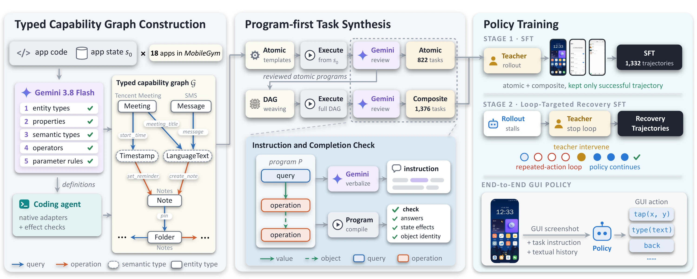
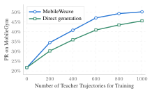
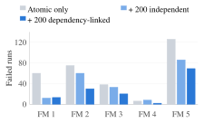
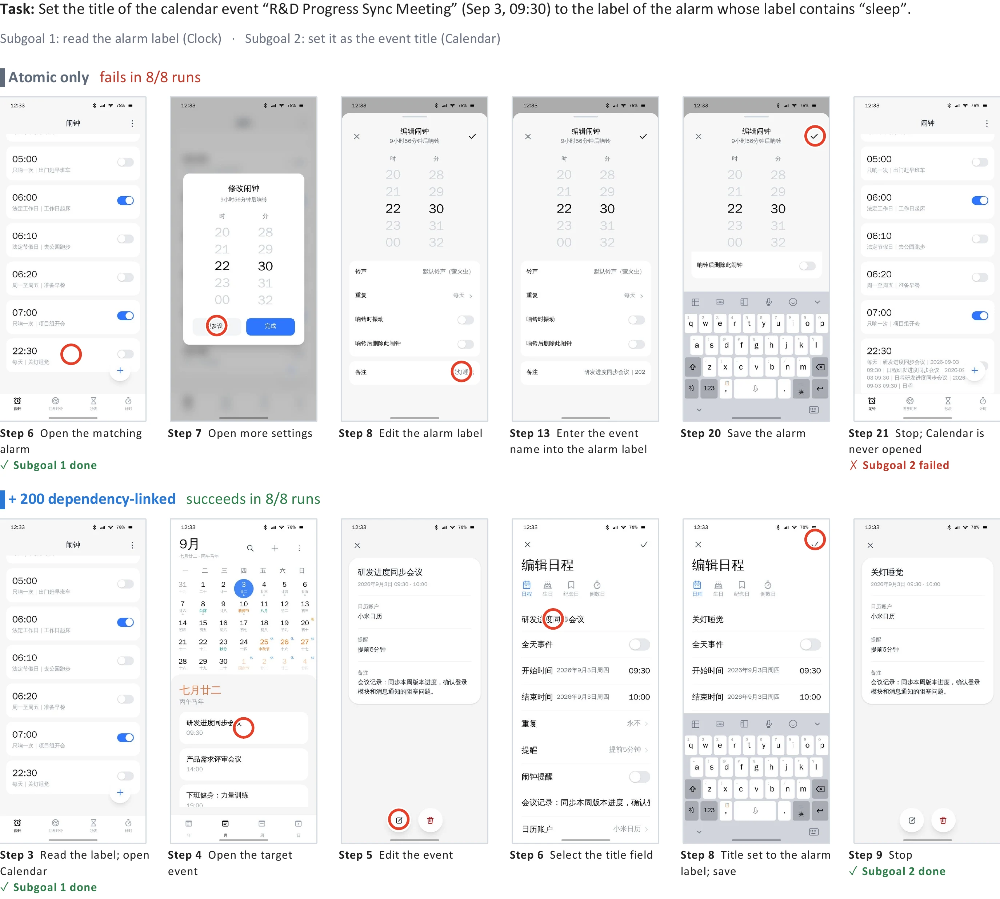
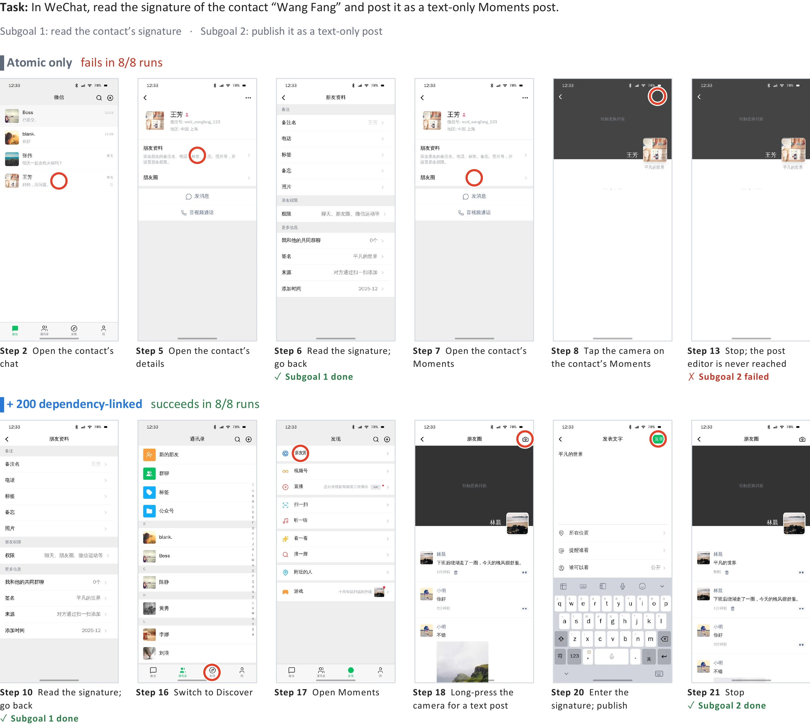
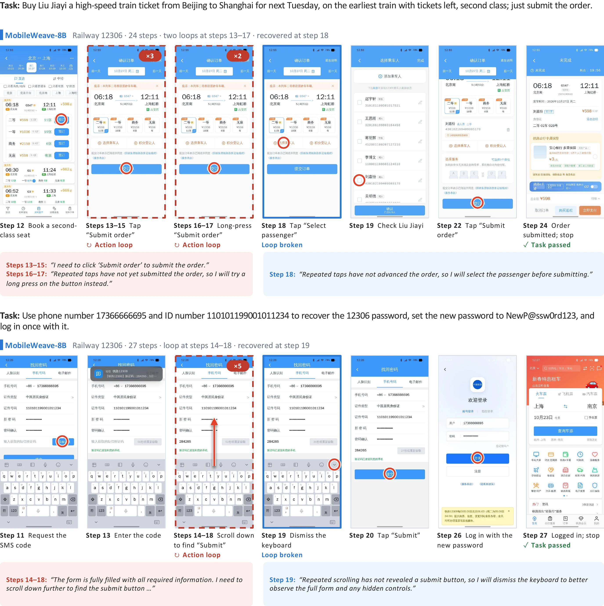
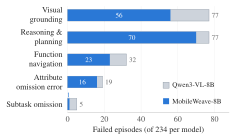

MobileWeave-8B success rates (%). AndroidLab and MobileWorld use apps that never appear in training.
Native mobile GUI agents require large-scale training trajectories covering both individual app functions and multi-goal workflows within and across apps, which makes automatic task synthesis a promising way to scale training data. Existing synthesis pipelines, however, produce each task as free-form text, leaving implicit how its subgoals depend on one another. This matters because composition is a skill in its own right: a policy may complete each subtask of a workflow on its own, yet fail to chain these subtasks into the complete workflow.
We present MobileWeave, which instead synthesizes every task as an executable program derived from the app implementations of a controllable simulator. MobileWeave abstracts each app into a typed capability graph with semantic types shared across apps, composes atomic programs into single- and cross-app composite programs through explicit value and object dependencies, and verifies each program by native execution, deriving both its instruction and its completion check from the same program.
Trained on teacher trajectories collected for these tasks and on recovery supervision at the policy's own stalls, MobileWeave-8B improves its base model by 26.7 points on MobileGym and by 8.6, 21.3, and 17.6 points on AndroidWorld, AndroidLab, and MobileWorld, with comparable gains at 4B. Beyond these gains, we find that composition is learnable from task structure: explicit dependencies between subgoals act as a training signal that teaches a policy to compose skills it already masters.

For each app, a language model extracts entities, semantic types, and operators from the app's state schema, UI code, and native functions. Semantic types are shared across apps, so a meeting's remarks can feed a note's body in another app.
Templates turn the graph into atomic programs, then weave two to four of them into composite programs. Value edges pass a query's output to a later input; object edges point a later step to an object an earlier step selected or created.
Each program is executed natively, without the GUI, and reviewed for a plausible user goal. The same program yields the instruction and the completion check: 822 atomic and 1,376 composite tasks.
A teacher executes the tasks through the GUI, and 1,332 successful trajectories form the SFT set. Loop-targeted recovery then adds one-step corrections at the states where the trained policy itself stalls.
Success rate (%) on one Task-OOD benchmark that shares the training simulator and three Env-OOD benchmarks that run on the Android emulator with entirely different apps. All added supervision comes from the MobileGym simulator.
| Model | Base | Task OOD | Env OOD | |||
|---|---|---|---|---|---|---|
| MobileGym | AndroidWorld | AndroidLab | MobileWorld | |||
| SR | PR | |||||
| Frontier models | ||||||
| GPT-6.1-Sol | – | 76.2 | 85.3 | 90.5 | 75.4 | 76.9 |
| DeepSeek-V4-Flash | – | 47.7 | 59.7 | 57.8 | 50.0 | 58.1 |
| Qwen3.8-Max | – | 62.9 | 71.7 | 85.3 | 71.0 | 77.8 |
| Gemini-3.1-pro-preview | – | 55.5 | 67.8 | 70.7 | 72.5 | 58.1 |
| Qwen3.8-27B | – | 58.6 | 73.8 | 81.9 | 68.1 | 70.1 |
| Open-weight models | ||||||
| Qwen3-VL-4B | Qwen3-VL | 9.4 | 20.1 | 44.0 | 40.3 | 9.1 |
| Qwen3-VL-8B | Qwen3-VL | 16.5 | 21.7 | 47.4 | 43.2 | 10.3 |
| Step-GUI-4B | Qwen3-VL | 9.0 | 18.7 | 63.9 | 47.8 | 16.2 |
| MAI-UI-8B | Qwen3-VL | 16.8 | 28.3 | 70.7 | 53.6 | 27.4 |
| UI-Venus-1.5-8B | Qwen3-VL | 15.6 | 28.3 | 73.7 | 55.1 | 17.1 |
| GUI-Owl-1.5-8B | Qwen3-VL | 17.2 | 31.3 | 69.0 | 35.5 | 38.5 |
| Open-data models | ||||||
| ScaleCUA-7B | Qwen2.5-VL | 6.6 | 15.5 | 48.3 | 31.2 | 7.7 |
| ForgeQwen3-8B | Qwen3-VL | 14.8 | 22.1 | 49.8 | 54.3 | 10.3 |
| OpenMobile-8B | Qwen3-VL | 13.7 | 31.5 | 64.7 | 51.5 | 17.7 |
| GUI-Libra-8B | Qwen3-VL | 15.6 | 25.3 | 43.6 | 44.9 | 14.5 |
| MobileGym-4B | Qwen3-VL | 22.3 | 34.4 | 47.4 | 37.7 | 17.1 |
| MobileWeave-4B | Qwen3-VL | 40.0 | 52.1 | 52.9 | 54.6 | 22.8 |
| Gain vs. Qwen3-VL-4B | +30.6 | +32.0 | +8.9 | +14.3 | +13.7 | |
| MobileWeave-8B | Qwen3-VL | 43.2 | 55.4 | 56.0 | 64.5 | 27.9 |
| Gain vs. Qwen3-VL-8B | +26.7 | +33.7 | +8.6 | +21.3 | +17.6 | |
SR: success rate; PR: progress rate. MobileWorld uses the GUI-only setting. Within open-data models, bold and underline mark the best and second-best result in each column. Qwen3-VL and MobileWeave numbers are averaged over eight runs on MobileGym and three runs elsewhere.

We compare MobileWeave with a baseline in which a language model reads the same app code and writes complete tasks directly, without a capability graph. Under matched trajectory budgets:
A policy trained only on atomic tasks may complete every constituent of a composite task on its own, yet fail on their combination. On 42 such tasks, the composition-gap split, dependency-linked composite training closes most of the gap.
| Training data | Split (42) | Other (211) |
|---|---|---|
| Atomic only | 9.2 | 83.7 |
| + 200 independent | 40.8 | 88.9 |
| + 200 dependency-linked | 60.1 | 92.1 |
SR (%) on 253 composite tasks whose constituent atomic tasks the atomic-only model completes reliably.

Practicing several goals in one episode is enough for the policy to attempt each one: subgoal omissions fall from 60 to 13. The errors between subgoals fall mainly with dependencies. Object-binding errors drop from 75 to 30, value-transfer errors from 38 to 20, and transition failures from 126 to 69.


Successful trajectories show how to finish a task, but not how to resume once execution stalls. Loop-targeted recovery SFT adds one-step teacher corrections at the policy's own loops.
| Benchmark | SR (%) ↑ | Trajectories with loop ≥ 3 ↓ | ||
|---|---|---|---|---|
| A + C | + Recovery | A + C | + Recovery | |
| MobileGym | 40.8 | 44.3 +3.5 | 95.3 | 75.0 −21% |
| AndroidWorld | 53.4 | 56.0 +2.6 | 12.0 | 6.7 −44% |
| AndroidLab | 59.2 | 64.5 +5.3 | 15.0 | 10.3 −31% |
Qwen3-VL-8B. A + C: trained on all 1,332 atomic and composite trajectories; + Recovery: the same model after recovery SFT. Averaged over three runs.


On MobileWorld, whose apps never appear in training, MobileWeave-8B fails less often than its base model in every error category of the MobileBench-OL taxonomy. The largest drops are in visual grounding (77 → 56) and function navigation (32 → 23), on interfaces the policy has never seen.
@article{he2026mobileweave,
title = {MobileWeave: Program-First Synthesis of Dependency-Linked Tasks for Training Mobile GUI Agents},
author = {He, Ziyi and Wu, Xian and Chen, Qiyuan and Li, Haitao and Yang, Cehao and Zhu, Yinghao and Zhang, Xichen and Chen, Xiao and Feng, Yushi and Yu, Lequan},
journal = {arXiv preprint arXiv:XXXX.XXXXX},
year = {2026}
}